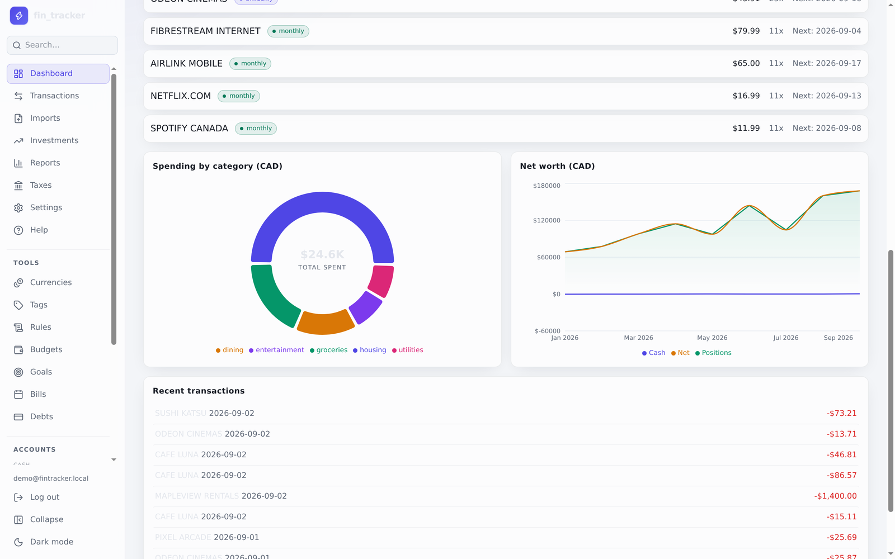
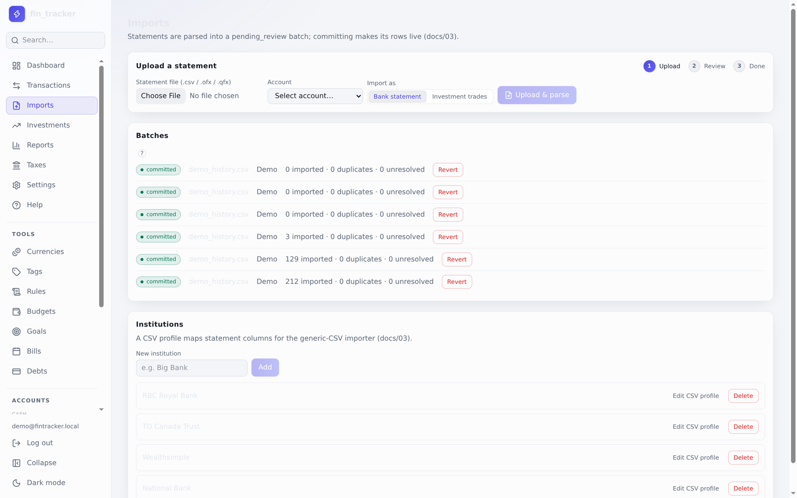
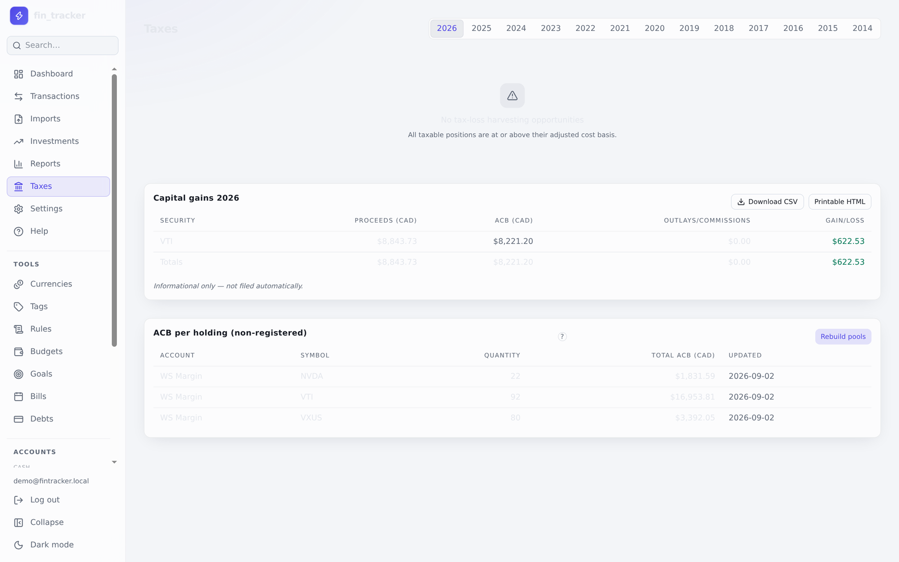
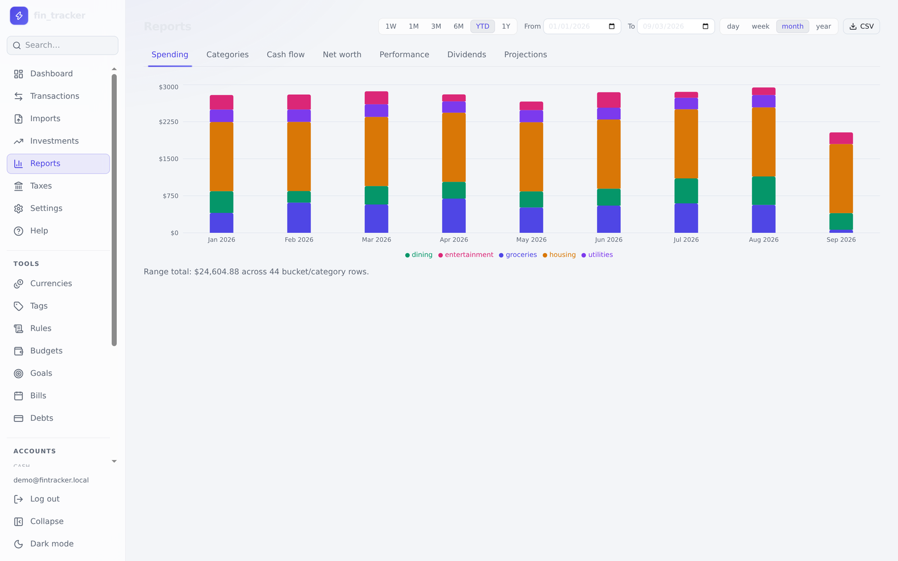

Self-hosted · Canadian · local-first
Know where your money goes.
fin_tracker is a self-hosted personal finance tracker for a Canadian user: import your bank and brokerage statements, track spending and investments, and get Canadian-tax-ready ACB / capital-gains reports — your data stays on the server you run.
Explore the demo Run it yourself
What it does
Import, Canadian taxes, and an export you never have to ask for — each card links to the guide that proves it, not to a claim.
Import is the hero, not the apology
Bank and brokerage statements land in a staging batch with a dry-run preview: review, then commit. Re-imports are blocked, and duplicate rows are skipped with counts in the batch summary — never guessed.
Proof: the import guides by bank →
Canadian, properly
ACB pools maintained in CAD per non-registered account, a Schedule-3-style capital-gains report per security, and a tax projection on CRA brackets — informational, with the disclaimer on the page.
Proof: the tax guide →
Yours, on your machine
One click exports everything as plain CSV and JSON — credential fields excluded — and nothing in the product phones home.
Proof: export & portability →
Everything in one place
Six things fin_tracker does for you every day.
Spending & imports
Rules, a learned payee map and an optional LLM suggestion queue file transactions as they land — with budgets, bill reminders and recurring-subscription detection on top.
Investments
Positions in CAD and USD listings, look-through exposure by sector, geography and asset class, dividend analytics and portfolio-vs-index benchmarks. Reports read your cache and never fetch.
Canadian taxes
Superficial-loss and return-of-capital handling, tax-loss harvesting alerts, and Bank of Canada FX on the trade date — cached, with a manual fallback when a rate is missing.
Reporting
Spending, cash flow, net worth, performance, dividends and capital gains — every report exports to CSV, and charts follow an accessibility contract.
Private by design
Privacy mode seals every outbound call — FX, prices, LLM, notifications — and TOTP two-factor plus passkeys guard the door.
Local-first AI
Categorization runs against your own Ollama or any OpenAI-compatible endpoint. Under privacy mode only loopback URLs are allowed — enforced at send time.
See it working
Real screenshots from the one-click demo.



Privacy, without the asterisks
Your data stays in the Postgres you run. No aggregator sits in the middle, and no bank credential is ever stored — statements are files you choose to upload.
Privacy mode is a full egress gate: Bank of Canada FX, price lookups, LLM calls, notifications and sync are all sealed — and the outbound-HTTP inventory in the docs says nothing else leaves the machine.
One-click export and an encrypted backup work with all cloud features off. Honest status: client-side encryption is in progress — the server can still read your data.
Android companion
A read-focused companion for your phone: sign in, glance at masked balances, and drill into accounts, holdings and transactions — every number traces to a server response, and the app makes no writes.
Editing, imports, trades and tax work stay on the web, and the home-screen widget is not built yet. Until the APK is published, phones get the same data through the installable web app.
Run it yourself
One repository, Docker 24+ with the compose plugin, and your own server: the app and its database run on hardware you control. The repository is private for now — source is available on request.
cd fin_tracker
cp .env.example .env # set a real JWT_SECRET in .env
docker compose up -d --build
Serve only this site (separate host-friendly image):
docker build -t fintrack-site ./site
docker run -p 8090:8080 fintrack-site
Honest limitations
Every finance app you have tried has a footer full of asterisks. Here is ours, written out.
- No scraping, no bill-pay. We never ask for your bank password and never sign in as you. Statements are files you choose to upload; bank sync exists only as an open-banking readiness seam, with no credential storage. And there is no bill payment — this is a tracker, not a bank.
- Not zero-knowledge. The same rows sit in plaintext columns and are served by the API. Client-side encryption is in progress — the server can still read your data, and the docs say exactly that.
- Tax help, not tax filing. Reports are informational and carry an explicit disclaimer; there is no CRA filing integration. Corporate actions are manual entries — an import containing an unknown split or merger is refused, not guessed.
- The Android companion is read-only. No creating or editing on the phone, and the home-screen widget is not built yet. Complex work stays on the responsive web.
- No pricing, because there is no billing. No payment processor, no plans, no metering — nothing to buy is a fact about the code, not a promotion.
- No trackers. No analytics SDK, no session recording, no third-party scripts, fonts or images — every request this site makes stays on this site, and its own test checks every page for a third-party load. This page ships one HTML document, one stylesheet and four screenshots of the product, and they stay because they are the proof.
No card, no trial clock. The demo is one click away. Explore the demo